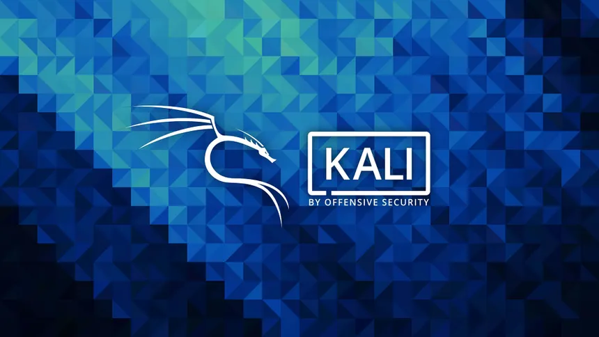

Kali Linux
Leer más
Kali Linux es una distribución de Linux de código abierto, basada en Debian GNU/Linux, diseñada específicamente para auditoría de seguridad, pruebas de penetración (pentesting), forense digital e ingeniería inversa. Su principal característica es que viene preinstalado con más de 600 herramientas de seguridad, como Nmap, Wireshark, John the Ripper y la suite Aircrack-ng, optimizadas para identificar vulnerabilidades y simular ataques controlados.